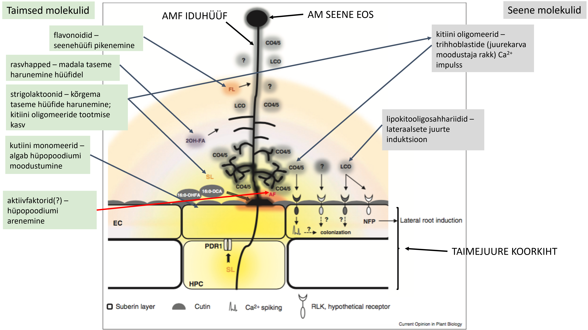
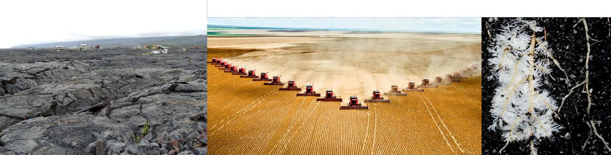
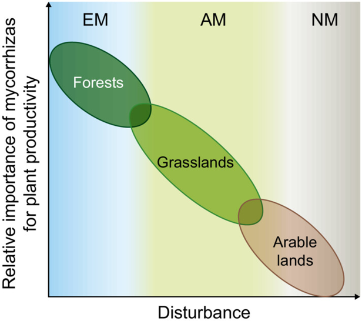
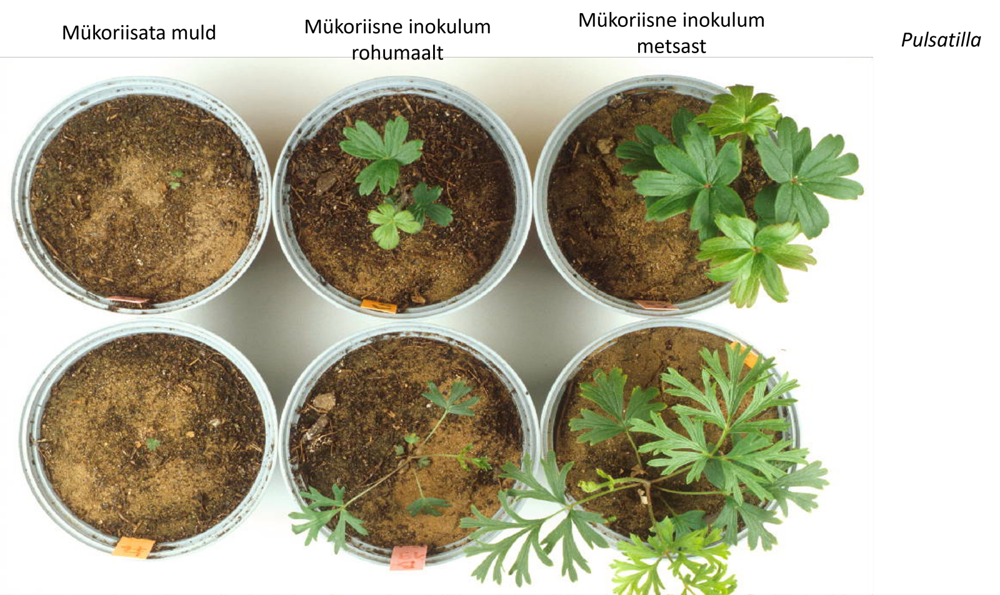
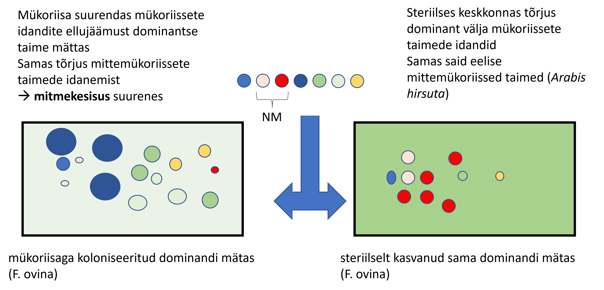
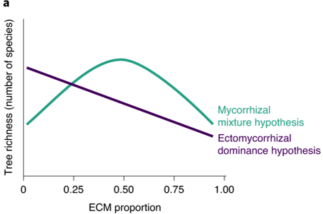
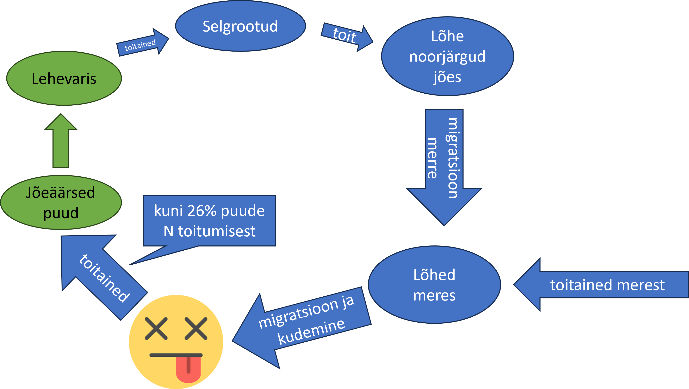

Troofiline mutualism
Nagu eelpool mainitud, on enamiku mutualistlike suhete puhul ühe osalise poolt saadav kasu toit. Troofilise mutualismi puhul saavad (peamiselt) toidu või energiaga seotud kasu mõlemad interaktsiooni osapooled.

Üks osapool on sageli spetsialiseerunud energia hankimisele (näiteks fotosünteesi teel) ning teine spetsiifiliste mineraalainete või muude ressursside kättesaadavaks tegemisele.
Sümbioos
Et just troofilise mutualismi puhul on kõige sagedamini juttu ka sümbioosist, olgu siinkohal lahti seletatud sümbioosi mõiste.
Begon and Townsend (2021): Symbiosis (‘living together’) is the term for such close physical associations between species, in which a ‘symbiont’ occupies a habitat provided by the body of a ‘host’. Mutualists are sometimes symbionts, but mutualists need not be symbionts. For example, plants often gain dispersal of their seeds by offering a reward to birds or mammals in the form of edible fleshy fruits, and many plants assure effective pollination by offering a resource of nectar to animals that visit their flowers. These are mutualistic interactions but they are no symbioses. Likewise, commensalisms may or may not be symbiotic; sucker fish in the family Echeneidae are adapted to hitch a ride on sharks and are symbiotic commensals, in contrast to the many commensal species inhabiting reefs that have no intimate physical connection to the coral species that build them.
Kunagi ilmavalgust nägevas ökoloogiaõpikus (Semchenko, isiklik korrespondents, 2025):
Termin sümbioos (symbiosis) tuleneb kreekakeelsest sõnast „συμβίωσις“ (sümbioosis), mis tähendab kooselu. Vanemas bioloogilises kirjanduses tähistati sellega igasugust kahe organismi pidevat intiimset koos elamist, sõltumata kasust või kahjust, mida üks või teine pool sellest sai. Ajapikku hakkas termin tähistama kahepoolselt kasulikku ehk mutualistlikku kooselu laias mõistes. Näiteks tähistas sümbioos vanemas ökoloogilises kirjanduses sisuliselt kogu mutualismi tänapäevases mõistes. Tänapäeval mõistetakse sümbioosi all siiski peamiselt vältimatut süvakooselu – olukorda, kus üldjuhul mutualistlikud organismid elavad pikaajaliselt koos, tehes seda sageli ühes ja samas kehas. Kusjuures vähemalt üks neist organismidest on üldjuhul selline, et ilma teisega sümbioosis olemata polegi ta võimeline eksisteerima. Üldmõisteks igasuguste positiivsete interaktsioonide jaoks on praeguseks kujunenud mutualism, ning sümbioos on üks selle alamtüüpe.
Kuivõrd pideva intiimse kooselu puhul on reeglina üks liik oluliselt väiksemate mõõtmetega kui teine, tehakse osapooltel vahet, nimetades suuremat peremeheks (host) ja väiksemat sümbiondiks (symbiont). Sümbiondiks on reeglina ainurakne organism (bakter, protist, ainurakne rohevetikas), või seen, kes võib olla nii ainu- kui hulkrakne. Sümbiondi mõju peremeesorganismile ei pruugi olla siiski alati positiivne, vaid võib olla ka neutraalne või negatiivne, sõltuvalt interaktsiooni kontekstist ja ka tõlgendusest. Mutualistlikke interaktsioone, seejuures eriti sümbiootilisi saab tõlgendada kui paratamatut vastastikku parasitismi. Kuna igal elusorganismil on väga palju interaktsioone, ning neist suure osa moodustavad interaktsioonid nugilistega, siis sümbioos võibki olla arenenud sedalaadi vastastikustest suhetest, mis algselt olid negatiivsed, ent mille käigus on osapooled arenenud üksteist oma kasuks ära kasutama, pöörates seeläbi interaktsiooni märgi miinusest plussi.
Antud kursuse kontekstis sooviksin jääda pisut konkreetsemale arvamusele: sümbioos on füüsiliselt integreeritud kooselu erinevat liiki organismide vahel [punkt]
Sümbioos ei ole mutualismi alatüüp, kuna samamoodi võib sümbiont (ehk peremehega intiimselt, füüsiliselt integreeritult koos elav liik) olla nii parasiit, kommensalist kui ka mutualist. Ärgem ajagem segamini kooselu “väljanägemist” interaktsiooni olemuse ning sellele rakenduva valikusurvega!
Maismaaökosüsteemide peamisi troofilisi mutualisme toimub mullas. Kui koolilaps õpib, et taimel on juur ja ta toitub autotroofselt, siis meie juba teame, et pea alati on taimed tihedalt seotud mitmesuguste oma elutegevuseks vajalike mikroorganismidega.
Mükoriisa

Mükoriisa on seene ja taimejuure diferentseerunud kooseluline vorm, kus taim ja seen on vastastikku kasulikus, mutualistlikus ning sümbiootilises suhtes. Mükoriisat moodustab umbes 250 000 maismaataimeliiki (90% taimedest) ning umbes 50 000 seeneliiki (0,5 - 10% seentest).
| Mükoriisatüüp | Taimerühmad | Taimeliike | Seenerühmad | Seeneliike (eeldatavasti) |
|---|---|---|---|---|
| Arbuskulaarne mükoriisa (AM) | Rohundid, kõrrelised, paljud puittaimed, kõder- ja maksasamblad | 200 000 | Glomeromycotina | 300 – 1 600 |
| Ektomükoriisa (EcM) | Pinaceae ja katteseemnetaimed (peamiselt parasvöötme puud-põõsad), mõned maksasamblad | 6 000 | Basidiomycota, Ascomycota | 20 000 |
| Orhidoidne mükoriisa (OrM) | Orchidaceae | 20 000 – 35 000 | Basidiomycota | 25 000 |
| Erikoidne mükoriisa (ErM) | Ericaceae, mõned maksasamblad | 3 900 | Ascomycota, (Basidiomycota) | > 150 |
| Mittemükoriissed taimed (NM) | Brassicaceae, Crassulaceae, Orobanchaceae, Proteaceae | 51 500 |
Interaktsiooni käigus tekivad seene- ja taimejuurerakkude ühisstruktuurid, mille kaudu toimub orgaanilise süsiniku transport taimest seende ning vee ja mineraalainete transport seenest taime. NB! See on nii-öelda standarddefinitsioon - tegelikult osaleb mükoriisa ka näiteks patogeenidevastases kaitses jne. Mükoriisaseened elavad mükoriisatüübist sõltuvalt taimejuure koorkihis, juurte pinnal või juureepidermi rakkude ümber - teine ots mullas.
Mükoriisa on klassikaline troofiline mutualism. Taim seob fotosünteesi käigus atmosfäärist süsinikku ja toodab energiarikkaid suhkruid. Kuna seened on heterotroofid ja fotosünteesida ei suuda, saavad nad oma elutegevuseks vajaliku süsiniku taimelt – sageli loovutab taim seenele kuni 30% oma fikseeritud süsinikust (ja pakub suhteliselt stabiilset elukeskkonda juures/juure peal). Vastutasuks toimib seeneniidistik taime juurestiku pikendusena. Seenehüüfid on oluliselt peenemad kui taime juurekarvad, suutes tungida mullapooridesse, kuhu taim ise ei ulatu, ning teha makrotoitained, näiteks fosfori ja lämmastiku, taimele paremini kättesaadavaks. Lisaks toitainetele võib seen varustada taime veega ning pakkuda kaitset teatud patogeenide ja raskmetallide eest.
Mükoriisse interaktsiooni moodustumine nõuab päris pikka biokeemilist signaliseerimisrada, mis on evolutsioonis tõenäoliselt tekkinud taime- ja seenepoolse vastastikkuse keele “äraõppimisena”.

Nimelt on näiteks arbuskulaarmükoriisa puhul näidatud, et seened on ära õppinud taimede stressivastusega (näiteks toitainetevaegusega) seotud hormoone tõlgendama signaalina mükoriisa moodustamiseks.

Roll ökosüsteemides
Mükoriisa moodustamine mõjuitab taimede produktiivsust/kohasust ja seekaudu ka taimekoosluste elurikkust. Samamoodi on mükoriisne sümbioos (ja mükoriisaseened oma struktuuridega) väga olulisel kohal lämmastiku- (N), fosfori- (P) ja süsiniku- (C) ringes (ja talletamises).

Mükoriisa osatähtsus on suurim metsades. Boreaalsetes metsades võivad EcM seened transportida enamiku taimele vajalikust lämmastikust (N), eriti toitevaestes muldades. Rohumaadel seisneb mükoriisa (AM) tähtsus taimekoosluse koosseisu ja liigirikkuse moduleerimises, mitte nii väga biomassi produktsioonis.

Süsinik (C)
5 - 50% taime poolt fotoassimileeritud süsinikust liigub mükoriisaseentele. Seente osised on jällegi raskemini lagundatavad kui taimed, mis tingib selle, et C jääb maa alla kauemaks “kinni”. Osaliselt sellest johtuvalt ongi mullas on rohkem (orgaanilist) süsinikku kui atmosfääris ja maapealses taimestikus kokku.
Sealjuures on näidatud (Averill, Turner, and Finzi 2014), et EcM poolt domineeritud kasvukohtades on süsiniku talletumine mullas suurem ku AM puhul. Seda seetõttu, et EcM (ja ErM) seened suudavad toota saprotroofseid (ehk orgaanilistest allikatest toitaineid, iseäranis lämmastikku, vabastavaid) ensüüme, konkureerides seekaudu lagundajabakteritega. Seetõttu väheneb nii C vabanemine keskkonda (sest et lagundajabakterite aktiivsus väheneb) ning taimed saavad seenele antud C ühiku kohta rohkem N vastu (mis omakorda tõstab C fotoassimileerimise taset).Lämmastik ja fosfor (N ja P)
AM seened võivad transportida kuni 90% taime omastatavast fosforist, EcM ja ErM seened võivad omakorda taimele viia kuni 80% viimase poolt vajatavast fosforist ja lämmastikust. Seekaudu vähendavad mükoriisaseened oluliselt ka toitainete leostumist ja denitrifikatsiooni ning stabiliseerivad toitainetevaru ja -voo stabiliseerimise kaudu ja ökosüsteemi (produktsiooni).
Globaalsel skaalal on näidatud, et AM seente kohalolu koosluses vähendas mulla N2O emissiooni ca 40% (Bender et al. 2014). Põhjus võib olla muidugi hoopis kaudne, nimelt mõjutavad AM seened denitrifitseerijate bakterite koosseisu suurenenud N fikseerimise kaugu taimses või seene biomassis, mulla N kättesaadavuse vähendamise (vähem substraati denitrifitseerijatele) ning mullavee efektiivsema (ära-) kasutamise kaudu seenkte ja taimede poolt (Veresoglou, Chen, and Rillig 2012).

Mõju taimede mitmekesisusele
Üks esimesi selgeid näiteid, et AM seened on taimekoosluste struktuuri ja mitmekesususe tugevad mõjutajaid (Grime et al. 1987) näitas, et mükoriisat sisaldav muld (vs steriilne, või õigemini mükoriisata, muld) surus alal dominantse liigi. Seda seekaudu, et dominante liik, Festuca ovina, oli küll mükoriisne, aga ta ei reageeri kolonisatsioonile eriti. Seevastu subdominantsed liigid olid väga mükoriissed ja reageerisid mükoriisale tugevalt positiivselt (mycorrhizal response).

Mükoriisa mõju taimekoosluse mitmekesisusele sõltub ka mükoriisatüübist. Carteron, Vellend, and Laliberté (2022) pakkus välja hüpoteesi, et kuna EcM pakub paremnat patogeenivastast kaitsed (ekromükoriisa moodustab juuretipu ümber tiheda seenmantli), soodustab EcM mõne taimeliigi domineerimist ning AM soodustab liigirikkust.

Miks peaks parem patogeenivastane kaitse soodustama mõne liigi domineerimist?
Sest et patogeenid on tihtipeale liigirikkust soosiv kas võrdsustav või isegi stabiliseeriv kooseksisteerimise mehhanism, mis surub alla muidu domineerima kippuvate liikide kohasuse. Seda siis kas puhtalt seekaudu, et ohtrat (ehk domineerivat liiki) kiputakse rohkem sööma (võrdsustav mehhanism), või siis seetõttu, et liigile spetsialiseerunud patogeenid tõmbavad selle liigi paljunemisedukuse alla sellevõrra, mida lähemal täiskasvanud sama liigi isendile asutakse (Janzen-Connell’i hüpotees, stabiliseeriv mehhanism)
Võrgustikud ja tit-for-tat

Mükoriisse võrgustiku kaudu liiguvad süsinik ja toitained seenehüüfide kaudu ühest taimest teise. Boreaalsetes metsades allokeerivad täiskasvanud puud suure osa süsinikust mükoriisavõrgustikku ning osa sellest süsinikust (isotoopmärgistamise katsed) on leitud istikutest/noortest puudest. Seega toimub tõenäoliselt taimedevaheline C ülekanne. Aga sellega on seotud hunnik vaidlemist, kel huvi, alustab näiteks kas või siit.
Mitmeaastase taimestiku puhul on mükoriissed võrgustikud olulised idandite kasvu juures. Idandid koloniseeritakse mükoriisses koosluses juba ca 3 – 6 päeva jooksul ning nood saavad seega kohese ligipääsu suhteliselt odavalt toitainete hankimise masinavärgile, mida pakub ja peab üleval ülejäänud vegetatsioon. Häiritud kooslustes, kus võrgustik puudub või lõhutakse regulaarselt, on nii kolonisatsioon kui idandite elumus väiksem.
Üldjuhul saab taim, kes panustab mükoriisavõrgustikku enim süsinikku, vastu ka rohkem toitaineid. Võimalik, et toimub nii taime- kui seenepoolne “tajumine” ning transportereid ehitatakse rohkem nendesse ühenduskohtadesse, kus toimub ülekanne kasulikuma partneriga. Aga alati on pettureid, ka mükoriisne sümbioos käib mööda parasitismi – mutualismi gradienti. Walder et al. (2012) näitas, et Linum ussitatissimum investeeris väga vähe C-d ühtsesse mükoriisavõrgustikku sorgoga, kuid sai seenelt 90% oma vajaminevast N ja P. Petmise ekstreemne näide on mükoheterotroofsed taimed (paljud käpalised, emajuurelised, kanarbikulised, maksasamblad), kes elavad mükoriisavõrgustiku epiparasiitidena.
Õhulämmastiku fikseerimine
\[ N_2 + 8H^+ + 8e^- \xrightarrow{16ATP + \sim12 ATP } 2NH_3 + H_2 \]
Kahe lämmastikuaatomi vahelise kolmiksideme lõhkumine nõuab tohutult energiat. Õnneks on selle töö enda kanda võtnud erinevad mikroorganismid. 1838. aastal kirjeldati esmakordselt nähtust, kus Fabaceae sugukonna taimed suurendavad mulla lämmastikusisaldust (J. Bossingault) ning juba 1886 täheldati, et taimejuurtel paiknevates mügarates elavad bakterid, kes seovad lämmastikkus (G. Hellrieger).

N2 siduvad mikroorganismid paiknevad fülogeneesipuul laiali (parafüleetiline funktsionaalne rühm):
Rhizobia (mügarbakterid) – moodustavad liblikõieliste taimede juurtel mügaraid
Azotobacteriaceae – aeroobsed lehe ja juure pinnal elavad
Enterobacteriaceae – termiitide seedekulglas (harva lehepinnal ja juuremügarates)
Actinomycetes (aktinomütseedid) – Frankia perekonna taimede juuremügarates
Cyanobacteria – õis- ja sammaltaimed, samblikud
Taimed on teatavasti võimelised omastama lämmastikku ka juurte kaudu mullast. Taimed eelistavad mullast omastada ammooniumioone (NH4+). Kahjuks enamik ammooniumi, mis mullas leida on, nitrifitseeritakse mikroobide poolt nitraadiks (NO3-).
Et nitraat tagasi ammooniumiooniks redutseerida, kulub (kaudselt) 12 ATP.
Ülalolevast valemist nähtub, et õhulämmastiku N2 fikseerimine maksab (ühe N-aatomi kohta) kokku umbes 14 ATP.
Sümbiootiline protsess on energeetiliselt kulukam!
Kuidas N-fikseeriv sümbioos üldse evolutsioneerunud on ja kuidas ta püsib?
Sest et fotosünteetiline energia on “odav energia”, aga N on tihtipeale keskkonnas limiteeriv!
Sümbiootiliselt fikseeritud lämmastik moodustab suurema osa maismaal aset leidvast N fikseerimisest (~45 megatonni aastas). Seetõttu on taimed võimelised kasvama lämmastiku poolest tunduvalt vaesematel muldadel kui muidu.
Sellega seotult on huvitav, et kuivõrd näiteks primaarsuktsessiooni puhul (ehk olukorras, kus taimkate kujuneb puhtale maale, laavaväli, merest kerkinud maa vms), kus on enamasti limiteerivaks just mulla (või veel substraadi) lämmastikusisaldus, võiksid olla N-fikseerivad liblikõielised suurepärased pioneerliigid. Aga ei ole. Miks? Sest et neil on nii suured seemned (uba, hernes, jne..), et nad ei levi! N-fikseerimisega tegelevad suktsessiooni alguses hoopis vabaltelavad bakterid ja samblikud (õigemini nende tsüaanobakteriaalne fotobiont). Samuti ei ole N-fikseerivaid kõrgemaid taimi palju hilissuktsessioonilistes kooslustes. Seda seetõttu, et N-fikseerimine on väga energiakulukas, aga väljakujunenud koosluses on limiteerivaks ressursiks tihtipeale just nimelt valgus (= energia).
Difuusne troofiline mutualism
Troofiline mutualism ei pea alati olema otsene ja füüsiliselt integreeritud sümbioos kahe liigi vahel. Ökosüsteemides esineb ka difuusset ehk hajusat troofilist mutualismi, kus ressursivahetus toimub keerukamate võrgustike kaudu.
Klassikaline näide on metsaökosüsteemi aineringe. Puude varis, mis on küll rikas süsiniku poolest, aga suhteliselt kehv mineraaltoitainete allikas, langeb maapinnale. See varis on tähtsaks toiduallikas mullas elatavele selgrootutele (näiteks vihmaussidele ja hooghännalistele) ning lagundajamikroobidele. Nemad saavad varisest eluks vajaliku energia, lagundades selle käigus keerulised orgaanilised ühendid lihtsamateks mineraalideks. Need vabanevad ja kergesti kättesaadavad toitained on omakorda hädavajalikud puude kastuks. Otsest füüsilist kontakti iga taime ja vihmaussi vahel küll ei ole, kuid nende elutegevus on ressursside tasandil vastastikku sõltuv.
Veelgi laiemalt vaadates võib difuusne mutualism siduda täiesti erinevaid ökosüsteeme. Hea näide on anadroomsete lõhede ränne ookeani ja mageveekogude vahel (Helfield and Naiman 2003), millega nad seovad maismaa- ja veeökoüsteemide ressursivood:
Jõeäärsete puude lehevaris on toiduks erinevatele vees elavatele selgrootutele
Neidsamu selgrootuid söövad hea isuga lõhe noorjärgud, kes veel jões elavad
Ühel heal hetkel migreeruvad need noorjärgud merre, kus on toitu palju rohkem
Kudemiseks migreeruvad täiskasvanud isendid tagasi samasse jõkkke, kudevad ja surevad
Kudenud lõhede lagunemisest vabaneb hulk lämmastikku
Puude lämmastikuga varustatus paraneb (kuni 26% puudeni jõuvast lämmastikust võib pärineda lagunevatest lõhedest).
Lämmastikuga rikastatud lehevaris langeb jõkke ja pakub külluslikumat toidulauda selgrootutele
.. keda söövad lõhe noorjärgud
